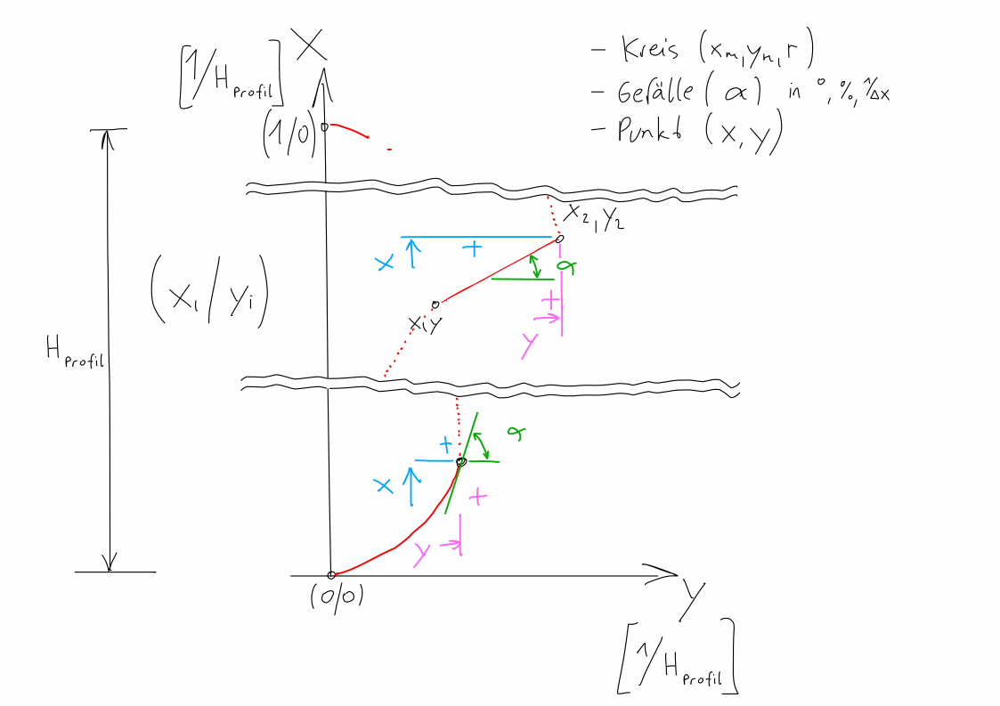
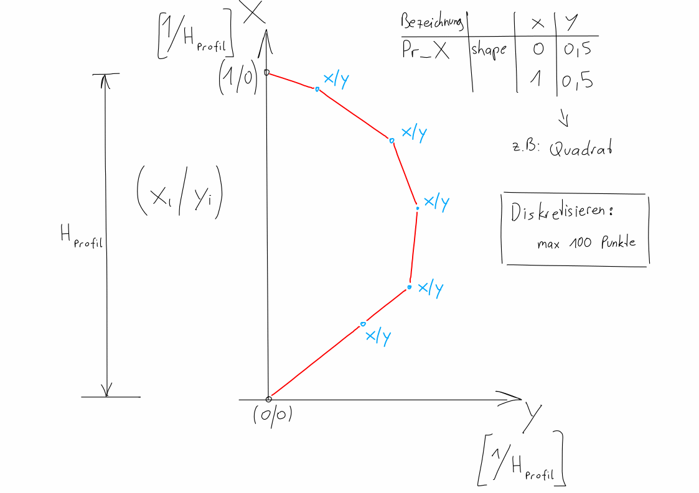

General information¶
This application should help you to generate cross-sections for the US-EPA Storm Water Management Model (SWMM) [1].
To understand the general usage of shapes in context to cross-sections, read the documentation of SWMM provided on the official website of EPA [1].
Units¶
The unit can be chosen freely, but must be consistent.

Make a some basic forms for the shape

A simple example of a shape
Dictionary¶
| english | deutsch | description |
|---|---|---|
| channel | Trockenwetter-Rinne | |
| roof | Firste | Boden an der Rohr Firste |
| wall | Wand | Radius der Wand |
Footnotes
| [1] | (1, 2) Official website of US-EPA SWMM https://www.epa.gov/water-research/storm-water-management-model-swmm |